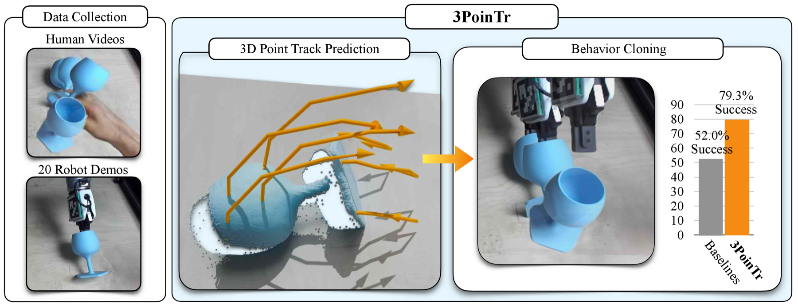
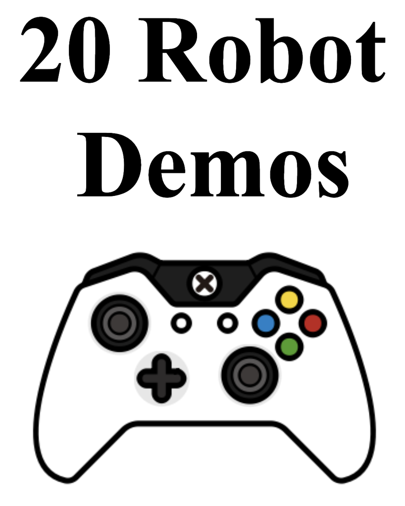
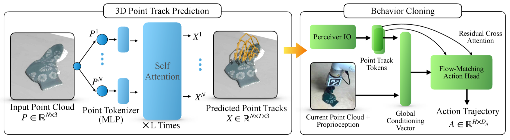
Diagram of the 3PoinTr network architecture. We first encode an initial point cloud, pass through a transformer decoder, and project each point token to a 3D point trajectory. This yields dense 3D point tracks that encode goal specifications, scene geometry, and spatiotemporal relationships. We then aggregate the per-point trajectory features using a Perceiver IO-style cross-attention module. A small set of learned query tokens attends to the full set of point track tokens, producing a compact global representation of the task. This representation is used as conditioning input to a Diffusion Policy, which generates an open-loop sequence of robot actions.
Simulation task success rate vs. number of robot demonstrations. Results are averaged across the four simulation tasks (Block Stack, Glass, Pot Lid, Open Microwave), evaluated over 200 rollouts per task with 100 actionless videos per task. 3PoinTr achieves the highest average success rate across all numbers of demonstrations.
| Task | ATM | DP3 | 3PoinTr |
|---|---|---|---|
| Open Drawer | 6/20 | 14/20 | 20/20 |
| Right Glass | 3/20 | 18/20 | 20/20 |
| Throw Away Paper | 0/20 | 9/20 | 18/20 |
| Fold Sock | 7/20 | 14/20 | 17/20 |
Real-world success rates for policies trained with 20 robot demonstrations and 50 human videos per task, evaluated over 20 rollouts. 3PoinTr achieves the highest success rate on all four tasks, with a 25.0% higher average success rate than the best baseline, DP3.
Ablation success rates (%) evaluated over 200 rollouts per simulation task, for policies trained with 20 demonstrations. 3PoinTr achieves the best average success rate, demonstrating that all four design choices—3D point tracks, the Perceiver IO encoder, the U-Net cross-attention, and additional human videos—contribute meaningfully to the final performance.
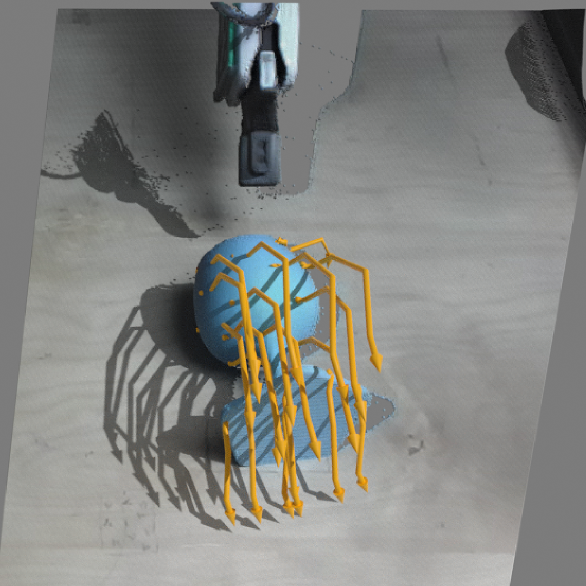
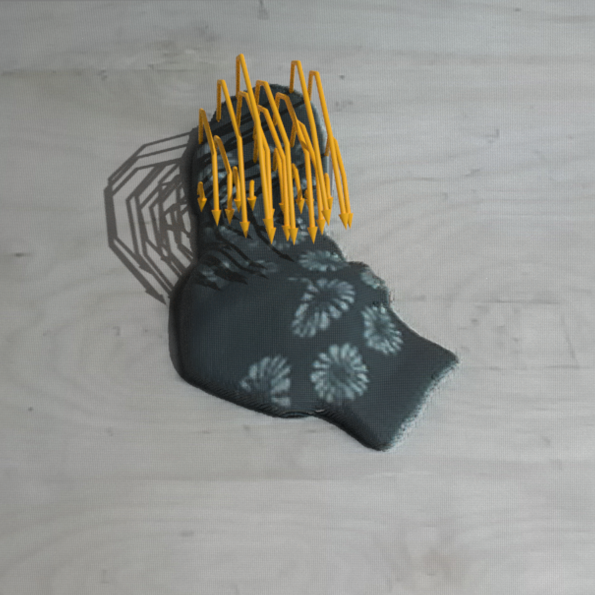
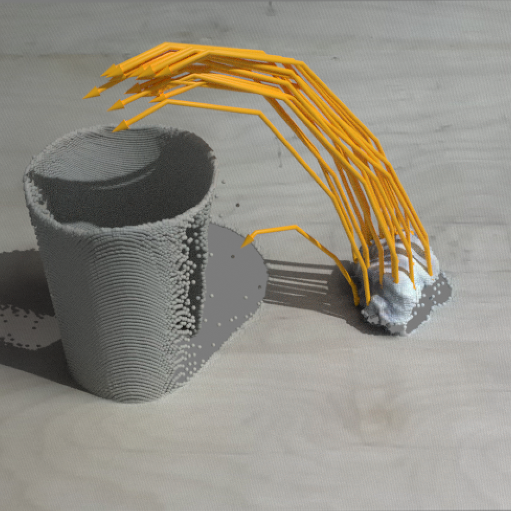
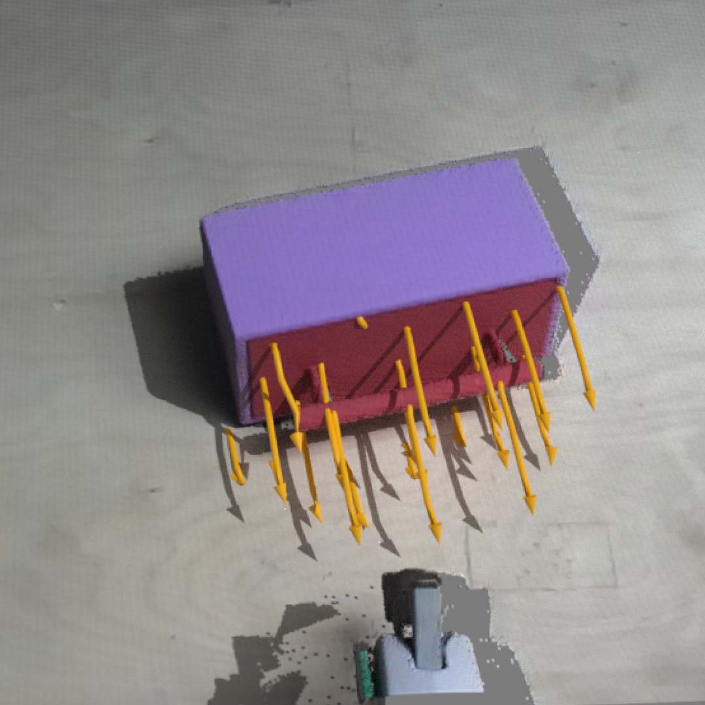
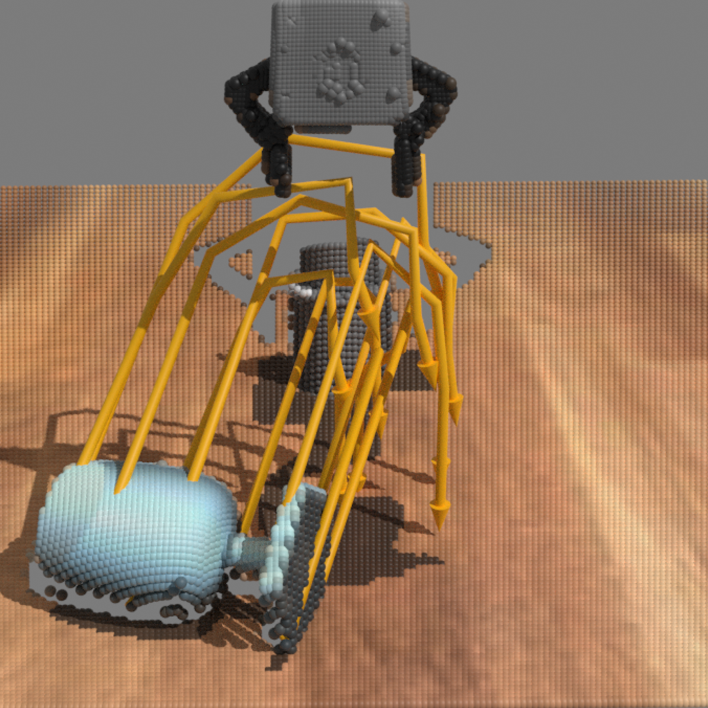
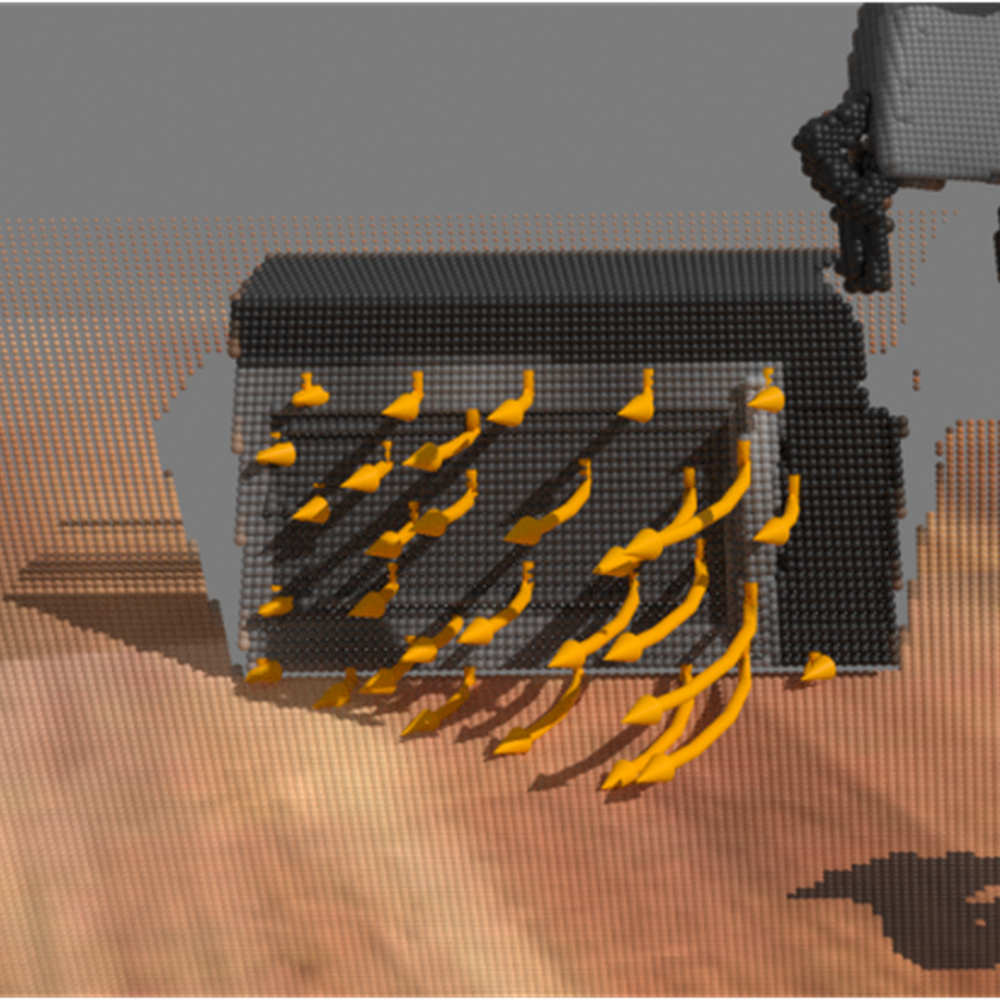
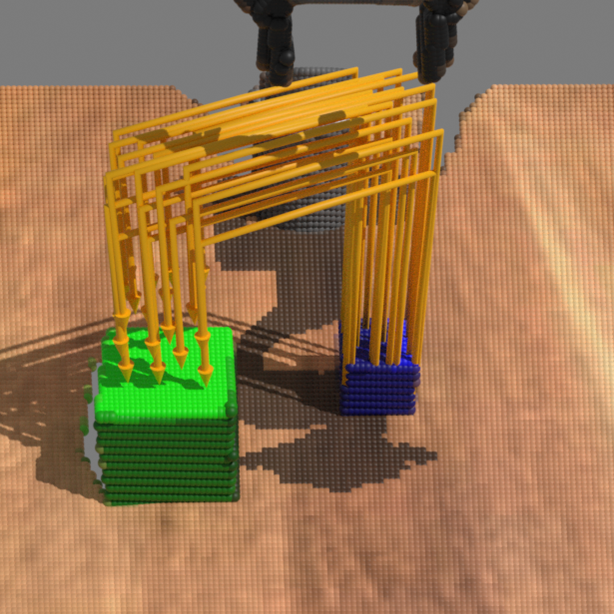
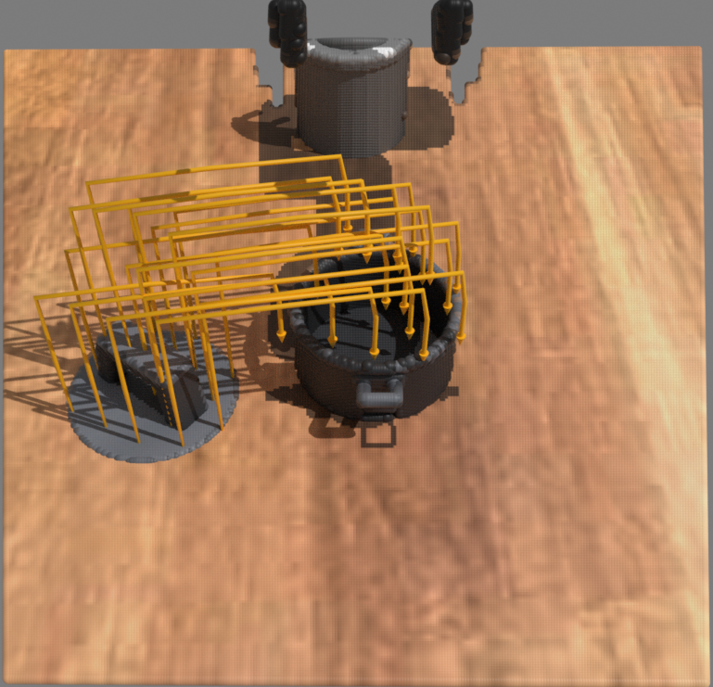
We also evaluate the quality of 3PoinTr's 3D point track predictions. Here we show Average Distance Error (ADE) and ADE of the 5% of points that move the most (5% ADE) for 3PoinTr and General Flow on real-world tasks (in millimeters). 3PoinTr outperforms General Flow in both metrics on every task, with average error reductions of 28.0% and 44.1% compared to General Flow.
This work is supported by the NSF GRFP (Grant No. DGE2140739).
@article{3pointr,
title={3PoinTr: 3D Point Tracks for Robot Manipulation Pretraining from Casual Videos},
author={Hung, Adam and Duisterhof, Bardienus P. and Ichnowski, Jeffrey},
journal={arXiv preprint arXiv:2603.08485},
year={2026}
}